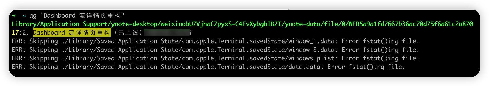
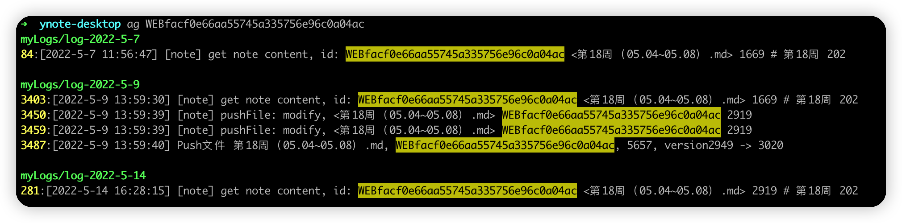
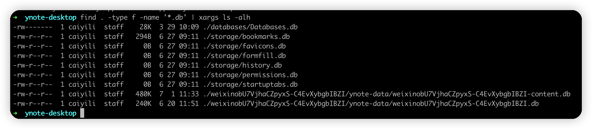
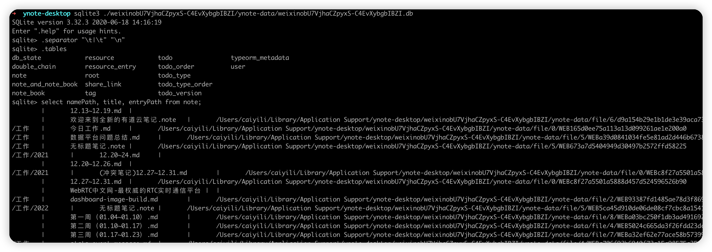

如何导出网易云笔记的markdown文件
之前在网易云笔记中记录的日常工作，想导出到iCloud中，但网易云笔记又没提供这种功能。
其实我们写的是markdown文件，理论上把这个文档复制出来就可以了，但关键是，网易云笔记把这些文件存在哪了呢？
所以问题就变成了，查找网易云笔记把markdown文件存在哪个目录了。
查找文档存储路径
在网上搜了一下这个问题，并没有找到答案，所以就只能自己查找了。
我们根据关键词，进行全局搜索。先猜测一下，因为这个是个人的数据，理论上应该是在mac用户的目录下，所以就不需要从根目录开始搜索了，就从$HOME目录开始搜索

发现这个文件是存在$HOME/Library/Application Support/ynote-desktop/weixinobU7VjhaCZpyxS-C4EvXybgbIBZI/ynote-data/file/0/WEB5a9a1fd7667b36ac70d75f6a61c2a870 这个路径下，打开这个文件，确认就是一篇完整的markdown文档。可以看出来，他的数据都存在$HOME/Library/Application Support/ynote-desktop 这个目录下，而具体的markdown内容存在weixin.../ynote-data/file/这个目录下。
PS: 为啥网易云笔记存的文档路径上带
weixin？
如何找到每个文档对应的文件名
文档存放位置是找到了，但他的文件名都是hash值，并不是我们的创建文档时的文件名，应该是在另外一个地方维护了这个对应关系。那么文件名和路径对应关系是存在哪呢？
先推测一下，一般有2种方式
- 用一个类似
json格式的文本文件来维护 - 用数据库来维护
如果是用文本文件维护的话，那我们找一个路径全局搜索一下，应该能搜索到，先尝试一下

如上图所示，确实有搜索到，但搜索出来的结果都是日志，其实把这个日志处理下，也能提取出文件名，但是…太麻烦了。
既然不是用文件来维护的，那很可能就是数据库，他会选择用什么数据库呢？
一个他要能离线使用，大概率就是sqlite数据库了，那我们尝试找一下这个数据库文件。
我们查找目录下所有的.db结尾的文件，并列出来大小，方便判断。
find . -type f -name '*.db' | xargs ls -alh

看起来./databases/Databases.db很可疑，不过我进去看了一下，并没有什么有用的信息。所以我又试了./weixinobU7VjhaCZpyxS-C4EvXybgbIBZI/ynote-data/weixinobU7VjhaCZpyxS-C4EvXybgbIBZI.db这个，嘿，发现真的就在这个文件里。
先连上数据库
sqlite3 ./weixinobU7VjhaCZpyxS-C4EvXybgbIBZI/ynote-data/weixinobU7VjhaCZpyxS-C4EvXybgbIBZI.db
查看下有哪些表
.tables
输出
db_state resource todo typeorm_metadata
double_chain resource_entry todo_order user
note root todo_type
note_and_note_book share_link todo_type_order
note_book tag todo_version
很明显，那个note表就非常可疑，查了一下，果然文件名和路径的映射关系就在这里面。

最后，我们来个完整的命令
echo "select title, entryPath from note" | \
sqlite3 ./weixinobU7VjhaCZpyxS-C4EvXybgbIBZI/ynote-data/weixinobU7VjhaCZpyxS-C4EvXybgbIBZI.db | \
while read line;
do
title=${line/|*};
filepath=${line#*|};
echo "title=$title filepath=$filepath";
cp "$filepath" "$HOME/Desktop/ynote/$title.md";
done
提取完之后，再整理整理，就可以复制到iCloud中去了。 最后效果：